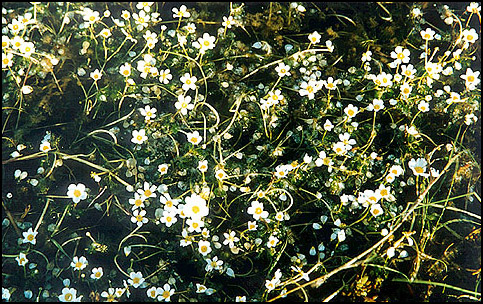
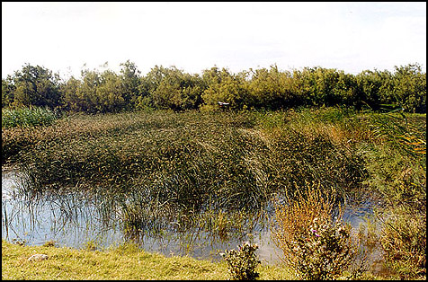

Στα υφάλμυρα νερά των λιμνοθαλασσών, στα κανάλια γλυκού νερού καθώς και σε όλες τις υδάτινες λεκάνες κατά μήκος του ποταμού `Εβρου, αναπτύσσεται η σημαντικότερη βλάστηση του υγροτόπου.
Η υδρόβια βλάστηση μπορεί ανάλογα με τις ειδικές προσαρμογές των φυτικών ειδών να διακριθεί σε τρείς ενότητες:
1) Η βλάστηση που αποτελείται από τελείως βυθισμένα υδρόβια φυτά και σχηματίζει υποβρύχιους λειμώνες στις υδάτινες λεκάνες και στα κανάλια. Τα κυριότερα είδη που συμμετέχουν στη σύνθεση της μονάδας αυτής είναι: Myriophyllum spicatum, Ceratophyllum sp.,Chara sp.
2) Η βλάστηση που αποτελείται από ριζωμένα ή μη στον πυθμένα είδη, με επιπλέοντα φύλλα ή άνθη στην επιφάνεια των νερών. Αυτός ο τύπος βλάστησης αναπτύσσεται σε πιό ρηχά νερά και αποτελείται από τα είδη Nymphaea alba Νούφαρο, Ranunculus fluitans Βατράχι, Lemma minor Φακή, Τrapa natans Νεροκάστανο, Potamogeton pectinatus, Potamogeton crispus κ.ά.
3) Η βλάστηση που χαρακτηρίζεται από φυτοκοινωνίες ελοφύτων (καλαμώνες) και αποτελείται κυρίως από ημιβυθισμένα είδη όπως: Phragmites australlis Aγριοκάλαμο, Typha angustifolia Ψαθί, Typha latifolia Ψαθί, Schoenoplectus lacustris, Butoms umbellatus κ.ά.
Η βλάστηση αυτή των καλαμώνων η οποία παίζει σημαντικό ρόλο για την ορνιθοπανίδα της περιοχής, είναι δυνατόν να διακριθεί σε τρείς φυτοκοινωνίες:
i) στα ρηχά νερά των λιμνοθαλασσών και κυρίως στις όχθες εκεί όπου επικρατούν υφάλμυρα περιβάλλοντα και μάλιστα στις θέσεις επαφής του αλμυρού και γλυκού νερού όπου επικρατεί αστάθεια ως προς την αλατότητα, απαντά η φυτοκοινωνία Bolbschoenetum (Scirpetum) maritime.
ii) στα γλυκά νερά των καναλιών και των εκτεταμένων υδάτινων λεκανών κατά μήκος του ποταμού Εβρου κυριαρχεί το είδος Phragmites australis που σχηματίζει εντυπωσιακούς καλαμώνες. Οι καλαμώνες του δέλτα Εβρου είναι οι σημαντικότεροι εναπομείναντες στην Ελλάδα μετά τις καταστροφές που έχουν υποστεί σε πανελλαδική κλίμακα.
iii) σε μικρές και κλειστές υδάτινες λεκάνες με ρηχά νερά, αναπτύσσεται η φυτοκοινωνία Scirpeto-Phragmitetum.Tα είδη που συμμετέχουν είναι: Phragmites australis, Typha angustifolia, Typha latifolia, Butomus umbellatus, Schoenoplectus lacustris, Oenanthe aquatica, Scirpus maritimus.
Στα αλμυρά και υφάλμυρα νερά, υποθαλάσσια, αναπτύσσονται πυκνά και σχηματίζουν υποβρύχιους τάπητες τα φανερόγαμα είδη Zostera nana και Ruppia maritima.Τα φύλλα των ειδών αυτών αποκόπτονται με τον κυματισμό σε μεγάλες ποσότητες και εναποτίθενται στις όχθες όπου σαπίζουν και σχηματίζουν βιότοπο πλούσιο σε νιτρικά άλατα.
Στις περιοχές γύρω από τα νησάκια Καραβιού Ξηράδι και Ασάνης υπάρχουν εκτάσεις που καλύπτονται από μεγάλους πληθυσμούς φυκών. Τα νερά αυτά χρήζουν ιδιαίτερης προσοχής καθώς εμφανίζουν το φαινόμενο του ευτροφισμού.
|
Βλάστηση λειμώνων |
|
|
Juncus spp. |
Βούρλα |
|
Mentha pulegium |
- |
|
Trifollium spp. |
Τριφύλλια |
|
Apium graveolens |
- |
|
Agropyrum elongatum |
- |
|
Oenanthe spp. |
- |
Η ενότητα αυτή της βλάστησης με διαφορετικά είδη Juncus sp. (βούρλα), είναι τυπική για Μεσογειακά δέλτα. Τα είδη αυτά φύονται σε θέσεις όπου υπάρχει ελάχιστη ή και καθόλου επίδραση του θαλασσινού νερού. Στη δυτική περιοχή του δέλτα Έβρου υπάρχουν τέτοια εδάφη σε μεγάλη έκταση κοντά στις καλλιεργούμενες περιοχές. Η βλάστηση που καλύπτει αυτές τις εκτάσεις είναι πολύ πυκνή και περιλαμβάνει πολλά είδη, γεγονός που οφείλεται στις ευνοικές συνθήκες εδάφους, διατηρεί αρκετή υγρασία ακόμη και το καλοκαίρι. Η συμμετοχή στην κοινωνία αυτή πολλών ειδών μερικά από τα οποία είναι άριστα νομευτικά (Fabaceae και Poaceae), έχει σαν αποτέλεσμα να χρησιμοποιούνται οι λειμώνες αυτοί ως βοσκότοποι.